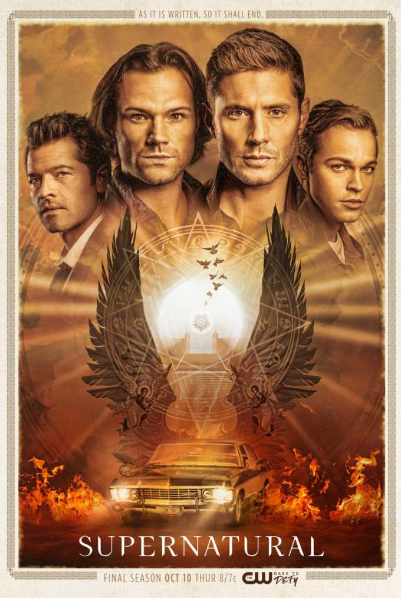
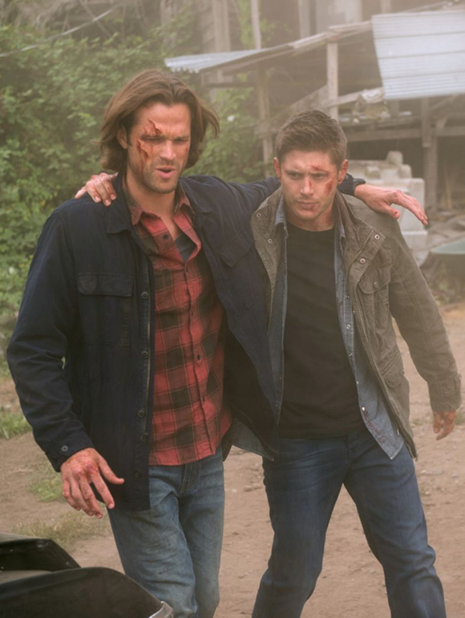

«Надприро́дне» — культовий американський телесеріал, що виходив з 2005 по 2020 рік, який поєднує в собі елементи містики, драми, детективу та жахів. Головні герої - брати Вінчестери Дін (Дженсен Еклз) і Сем (Джаред Падалекі), які полюють на демонів, привидів, перевертнів, вампірів та інших монстрів і борються з небезпечними наслідками надприродного.
У світі телевізійних серіалів існує справжня «паранормальна» присутність. Незважаючи на те, що перша серія вийшла більше 15 років тому, серіал продовжує завойовувати глядачів і підтримувати високі рейтинги.
Коротко про серіал
Однією з головних причин успіху «Надприродного» є якість сценарію та акторської гри. Серіал не лише передає жах і фентезі, але й торкається важливих філософських питань та емоційних подій. Майстерне перемикання між небезпекою та змістовним наповненням робить серіал унікальним і привабливим для широкого кола глядачів. Сьогодні глядачі віддають перевагу перегляду «Надприродного» онлайн у зручних для них місцях.
Крім того, «Надприродне» створює особливу атмосферу, яка змушує глядачів співпереживати персонажам і перейматися їхніми долями. Серіал викликає широкий спектр емоцій, від страху і напруги до сміху і радості. Глядачі можуть відчути себе частиною надприродного світу, що робить серіал популярним і довготривалим явищем у світі телебачення.
